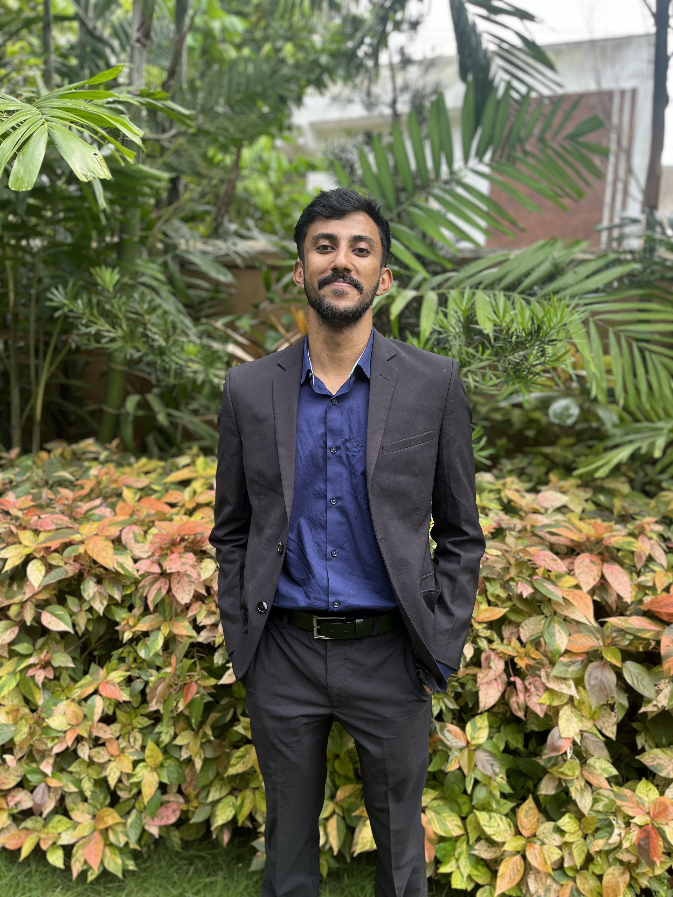

<div class="align-items-center default-container">
  <div class="col-lg-8">
    <div class="content">
      <div class="content-left">
        <h2 class="default-topic">About me.</h2>
        <p class="default-p">
          My name is <span class="default-highlight">Jithin Jose</span>, and I
          enjoy
          <span class="default-highlight"
            >building scalable and user-friendly applications</span
          >.
        </p>
        <p>
          
        </p>
        <p class="default-p">
          I am a
          <span class="default-highlight">Full-Stack Developer</span> from
          Kerala, India. I am fluent in English and Malayalam, and I have a
          strong foundation in web development and frontend technologies.
        </p>
        <p class="default-p">
          My interest in software development started during my college years
          when I was introduced to programming languages like
          <span class="default-highlight">C</span> and
          <span class="default-highlight">Python</span>. Over time, I developed
          a passion for solving real-world problems through code, which led me
          to pursue a career in
          <span class="default-highlight">Full-Stack Development</span>.
        </p>
        <p class="default-p">
          Fast-forward to today, I have gained hands-on experience in building
          and maintaining applications using modern technologies like
          <span class="default-highlight">Angular</span>,
          <span class="default-highlight">React</span>,
          <span class="default-highlight">Python</span>, and
          <span class="default-highlight">Django</span>. I have also worked with
          databases such as <span class="default-highlight">MySQL</span> and
          <span class="default-highlight">MongoDB</span>, and I am proficient in
          version control systems like
          <span class="default-highlight">Git</span>.
        </p>
        <p class="default-p">
          I am passionate about creating
          <span class="default-highlight">efficient</span>,
          <span class="default-highlight">scalable</span>, and
          <span class="default-highlight">user-friendly</span> software
          solutions. Whether it's front-end development, back-end services, or
          full-stack applications, I strive to deliver high-quality results that
          meet user needs and business goals.
        </p>
        <p>
          
        </p>
        <p class="default-p">
          In my current role as an
          <span class="default-highlight">Angular Developer</span> at Srishti
          Innovative, I have developed and maintained multiple applications
          using a full-stack approach. I leverage
          <span class="default-highlight">Python</span> and
          <span class="default-highlight">Django</span> for backend development
          and <span class="default-highlight">Angular</span> and
          <span class="default-highlight">React</span> for the frontend. I also
          use <span class="default-highlight">Git</span> for version control to
          ensure code integrity and effective team collaboration.
        </p>
        <p class="default-p">
          I have experience working with
          <span class="default-highlight">Docker</span> for containerization. I
          am also familiar with <span class="default-highlight">Linux</span> and
          <span class="default-highlight">Windows</span> operating systems,
          which allows me to adapt to different development environments
          seamlessly.
        </p>
        <p class="default-p">
          Beyond technical skills, I value
          <span class="default-highlight">teamwork</span> and
          <span class="default-highlight">continuous learning</span>. I believe
          that collaboration and knowledge-sharing are key to building
          successful projects and fostering a positive work culture.
        </p>
        <p>
          
        </p>
        <p class="default-p">
          On a personal note, I enjoy
          <span class="default-highlight">reading</span>, exploring new
          technologies, and staying updated with the latest trends in software
          development. I am also passionate about
          <span class="default-highlight">open-source projects</span> and
          contributing to the developer community.
        </p>
        <p class="default-p">
          I am continuously learning and adapting to new technologies and
          methodologies. My goal is to create
          <span class="default-highlight">innovative solutions</span> that make
          a difference and help organizations achieve their objectives.
        </p>
        <p class="default-p">
          Now that you've read this far, let me wrap this up with a final
          thought.
        </p>
        <p class="default-p">
          Technology is constantly evolving, and I take great pleasure in being
          part of this ever-changing landscape. I am excited to contribute to
          the
          <span class="default-highlight">future of software development</span>
          and create solutions that have a meaningful impact.
        </p>
      </div>
      <div class="content">
        <div class="content-left">
          <h2 class="default-topic">Reach out.</h2>
          <p class="default-p">
            Follow me on social media, check out my GitHub account for projects,
            or
            <span class="default-highlight">reach out to arrange a meeting</span
            >. I would be happy to discuss how my
            <span class="default-highlight">problem-solving skills</span> can
            help address the challenges you are facing.
          </p>
          <button>
            <a routerLink="/contact" class="a-green"> &gt; Contact me </a>
          </button>
        </div>
      </div>
    </div>
  </div>
</div>
